Este es un departamento lleno de riqueza natural y muchos paraísos que a lo mejor no conocías, con un clima variado, Santa Rosa es un destino ideal para poder disfrutar las maravillas de Guatemala. Desde lagunas rodeadas de vegetación hasta amplias playas, este departamento ubicado en la región sudeste, es un sitio turístico que debes conocer. ¡Arregla tus maletas y descubre los paraísos de Guatemala en estos lugares turísticos de Santa Rosa!
Laguna de Ayarza, Santa Rosa
Esta es una de las lagunas más impresionantes de Guatemala, en ella se pueden hacer actividades extremas como bucear y kayak. Conocida como Espejo de Santa Rosa, esta hermosa laguna tiene una extensión de 14 kilómetros cuadrados y está a 1409 kilómetros por encima del nivel del mar. Este lugar cuenta con una vegetación extraordinaria y no digamos la vista.
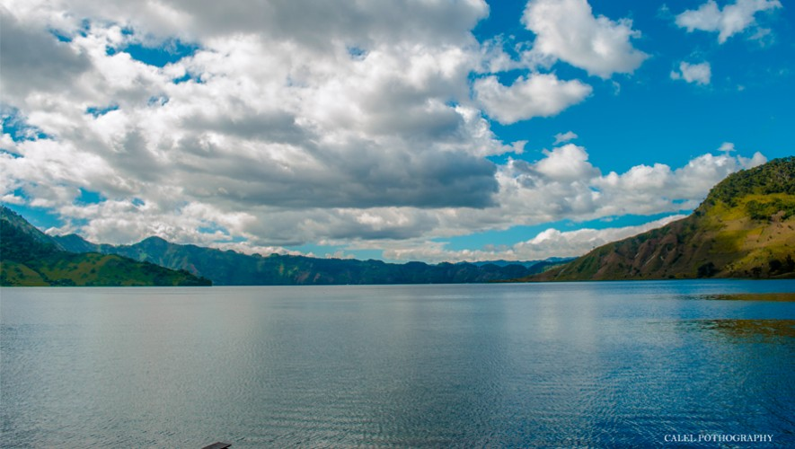
Playa Las Lisas, Santa Rosa
Playas Las Lisas se encuentra ubicada en el departamento de Santa Rosa, cuenta con paisajes inolvidables y con un clima bastante agradable para disfrutar del mar. En este lugar se puede bucear, realizar otros tipos de actividades extremas por si tienes ganas de salir de la rutina y vivir una nueva aventura.
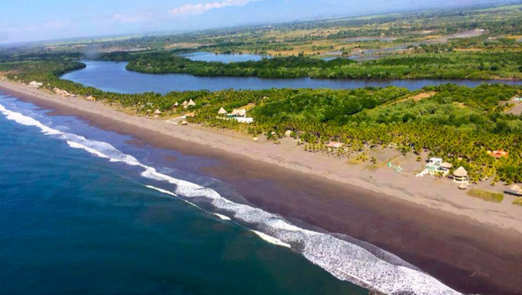
Laguna Ixpaco, Santa Rosa
Esta es una laguna ubicada en Santa Rosa, es muy peculiar debido a que contiene altos grados de azufre, ya que es parte de la actividad del volcán Tecuamburro, su olor es distinto y muy fuerte debido al azufre. Lo más lindo es que alrededor de la laguna encuentras árboles frondosos con toques de colores que hacen un paisaje único. Si quieres un baño de azufre, esta es la mejor opción.
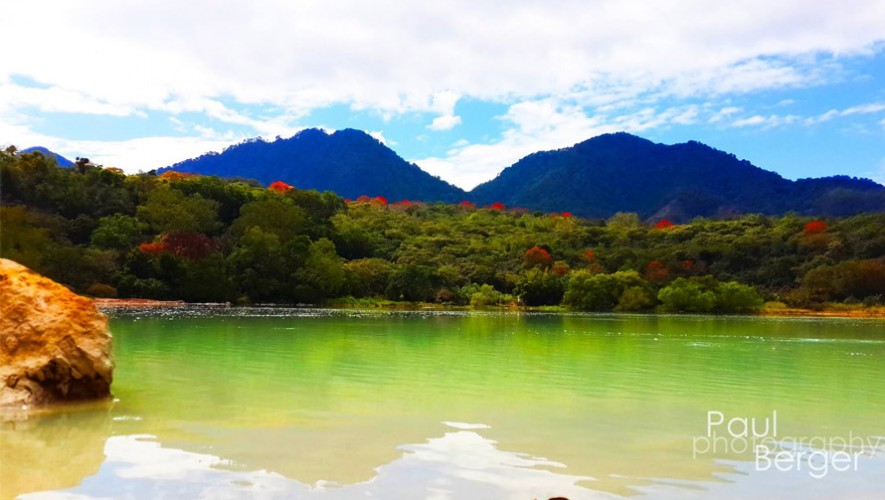
Playa Monterrico, Santa Rosa
En Santa Rosa, esto se debe a que es un sitio muy atractivo para los turistas. Con playa muy amplia, un clima espectacular y unos atardeceres inigualables, definitivamente Monterrico es uno de los mejores destinos con los que este departamento cuenta.
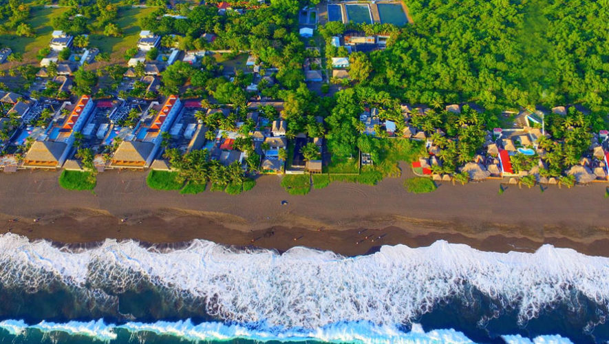
Canal de Chiquimulilla, Santa Rosa
El paisaje de este lugar es único, el Canal de Chiquimulilla se encuentra muy cerca del mar, pero la división que se ha formado gracias a las plantas y vegetación es impresionante. Lo mejor de todo es que puedes atravesar este canal en lancha para poder conocer todos sus rincones, durante el recorrido verás garzas volando, peces y muchos tipos de plantas
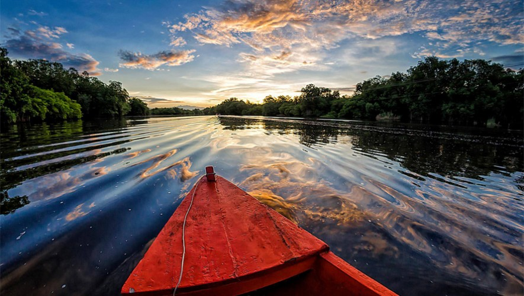
Cascada de Los Amates, Santa Rosa
Esta cascada es considera entre las más altas de Guatemala, con una belleza inigualable. Tiene un imponente tamaño debido a que su alto supera los 50 metros de caída y 20 metros de longitud. Si viajas a Santa Rosa, asegúrate de conocerla, es de los sitios más visitados por encontrarse rodeada de vegetación y crear un paisaje único.
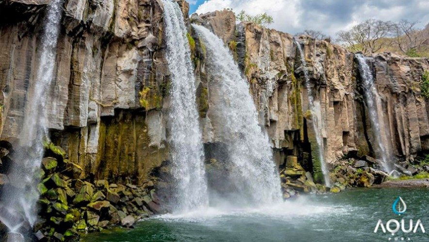
Playa El Hawaii, Santa Rosa
No es necesario salir a otros países para conocer impresionantes playas, Hawaii está ubicada en Santa Rosa y cuenta con un espacio muy bonito lleno de vegetación y mucha arena. Lo mejor es que en esta zona encontrarás hoteles y restaurantes muy buenos a los que puedes ir para complementar tu visita. ¡A disfrutar!
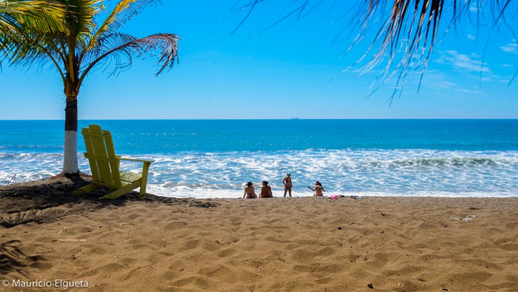
Laguna del Pino, Santa Rosa
La laguna del Pino se encuentra muy cerca de la Ciudad de Guatemala, en el municipio de Barberena. Si buscas alejarte del estrés cotidiano, este sitio es ideal para conectarte con la naturaleza y vivir un momento de relajación. Está rodeada por extensas áreas verdes, ideales para actividades de recreación, como pic-nic y acampar.
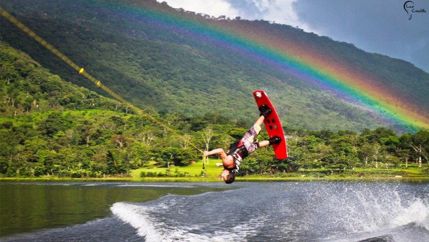
Volcán Tecuamburro, Santa Rosa
Este volcán forma parte de un complejo volcánico con varias cumbres o cimas, a comparación de otros que solo tienen un cono volcánico. También conocido como Montaña de Chiquimulilla, cuenta con plantaciones de café, plantas y con la laguna azufrada de Ixpaco al lado. Es fácil de observar desde varios puntos estratégicos de Santa Rosa y escalarlo lleva aproximadamente dos horas.
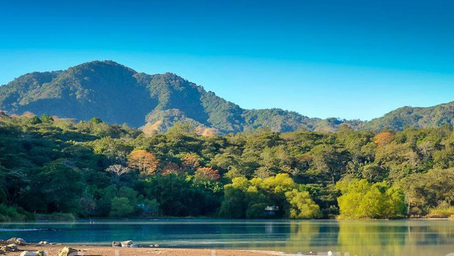
Embarcadero La Avellana, Santa Rosa
Embarcadero La Avellana se encuentra en la costa de Santa Rosa, en este lugar podrás cruzar en ferry el canal de Chiquimulilla navegando entre manglares, mucha naturaleza y distintas especies de animales. Lo mejor de todo es que tu carro viajará contigo, siendo una ruta que muchos utilizan para vacacionar en sitios más lejanos llenos de belleza natural.
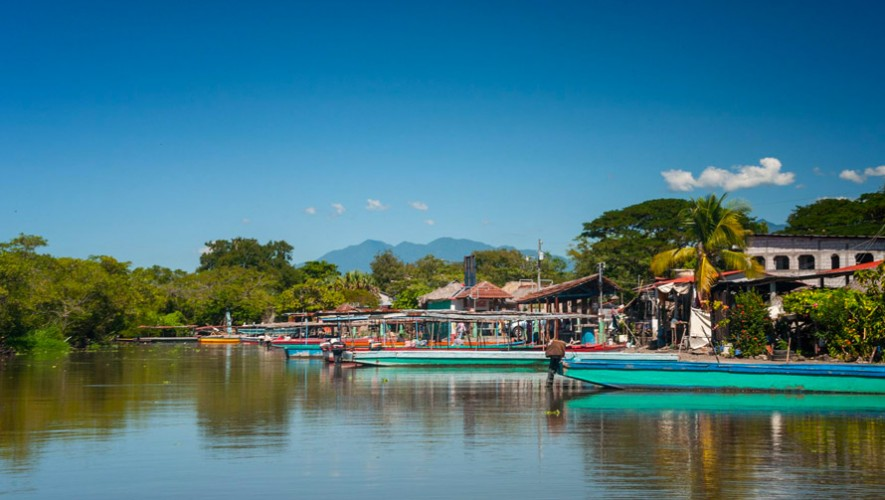
Cascada la Concepción, Santa Rosa
Esta es una hermosa cascada que se encuentra rodeada de naturaleza de Cuilapa, Santa Rosa. Lo bonito de este lugar es que se encuentra rodeado de naturaleza, lleno de detalles verdes que hacen una linda combinación con el agua que desciende de la cascada. Si quieres conocerla, se encuentra en la Aldea de Concepción en el municipio de Cuilapa.
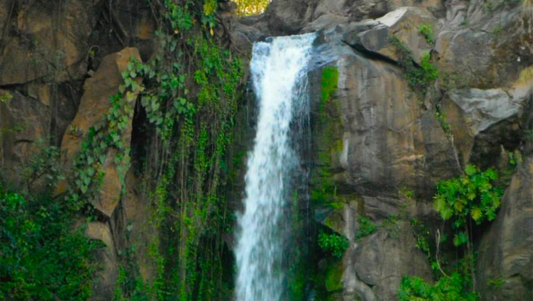
Volcán Cruz Quemada, Santa Rosa
El Volcán Cruz Quemada se encuentra a una altura de 1690 metros sobre el nivel del mar, siendo un lugar muy pintoresco en donde se pueden observar plantaciones de café. Para poder escalarlo es necesario recorrer aproximadamente una hora de camino desde Santa María Ixhuatán rumbo al sureste. Ya existe una carretera de terrecería que pasa al pie del volcán.
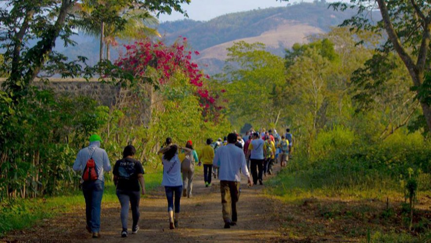
Turicentro Las Victorias, Santa Rosa
Este es un lindo complejo que te ofrece muchas comodidades para que puedas pasar un día relajado, con distintas piscinas, áreas de juegos y ranchos para preparar alimentos. Ubicado en Amberes, Santa Rosa, este es un buen lugar para visitar si estás en búsqueda de relajación y un día totalmente diferente.
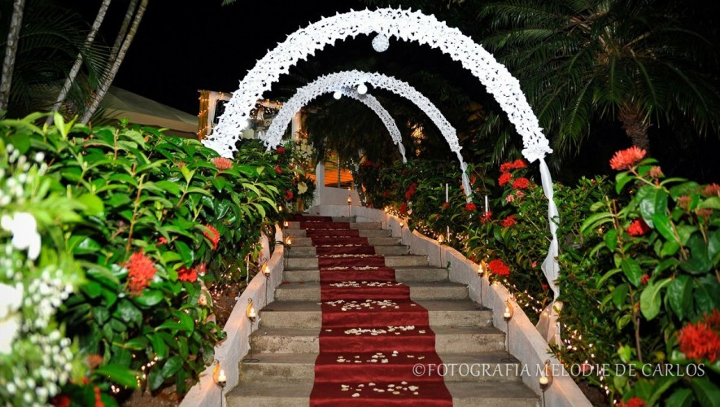
El Río los Esclavos atraviesa este hermoso departamento, contando con mucha vegetación a su alrededor. Un dato muy interesante de este sitio es que el puente Los Esclavos lleva más de 400 años en el mismo lugar, a pesar de que ha sufrido daños, su estructura se mantiene muy fuerte. Si tienes oportunidad, conoce este río y su puente.
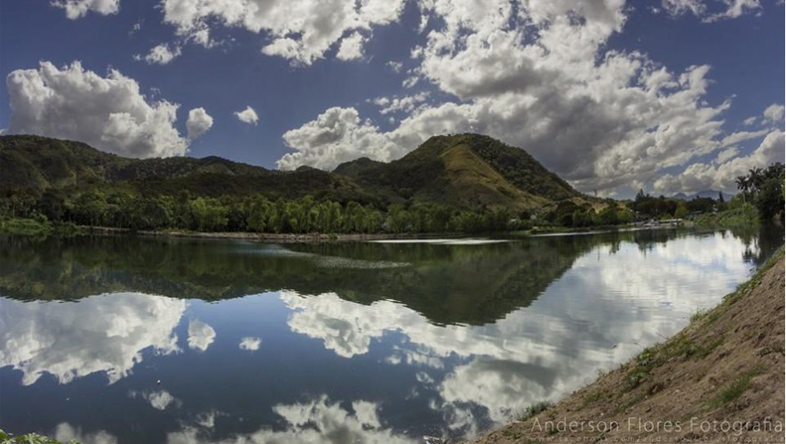
Turicentro el Edén, Santa Rosa
Si planeas viajar con niños o tienes ganas de piscinas, este turicentro te lo ofrece. El Edén, ubicado en Guazacapán, es un lugar entretenido, ideal para distraerte y pasar un buen día. Cuentan con piscinas para niños, adultos, senderos, zoológico y cabañas para que disfrutes de un día familiar.
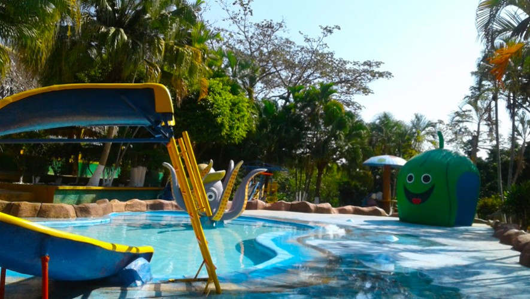
Parque Central, Nueva Santa Rosa
En el parque Central de Nueva Santa Rosa podrás encontrar mucha vegetación, arcos con bancas para que puedas descansar y también una linda catedral al fondo. Este es un sitio que se caracteriza por ser muy colorido, lleno de vida y de cultura de este departamento. Si viajas a Santa Rosa asegúrate de conocer este lindo parque.
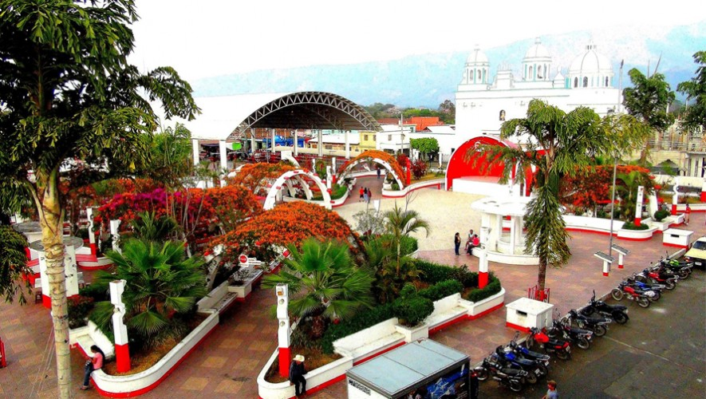
Templo Minerva, Santa Rosa
Así como en otros departamentos de Guatemala, en Santa Rosa también puedes encontrar un Templo Minerva que fue construido en tiempos de Jorge Ubico. Este templo se encuentra dentro de la cabecera municipal, así que su acceso es bastante fácil, puedes observar su estructura y caminar por el parque que lo rodea.
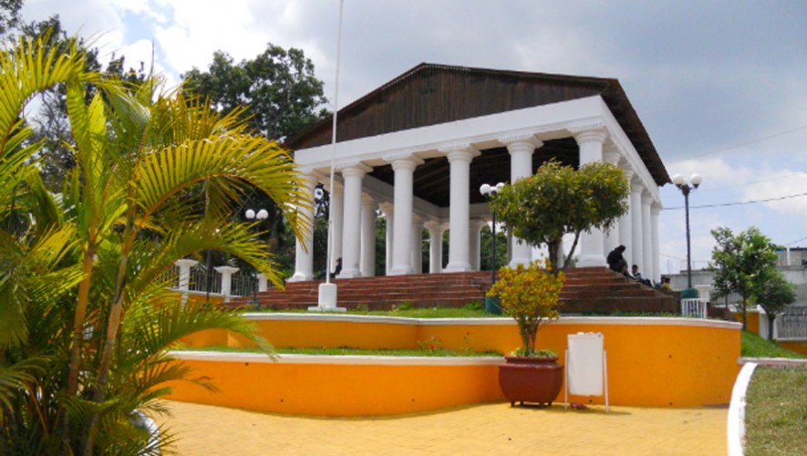